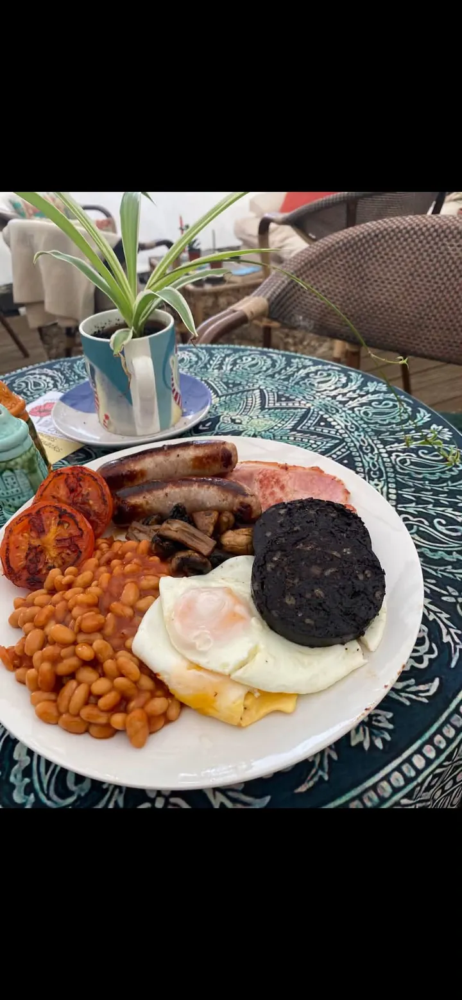
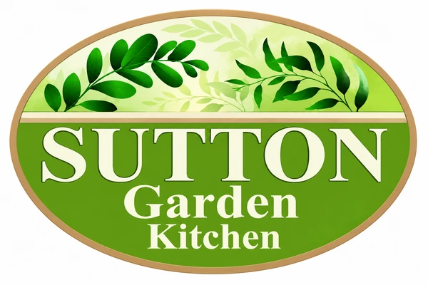
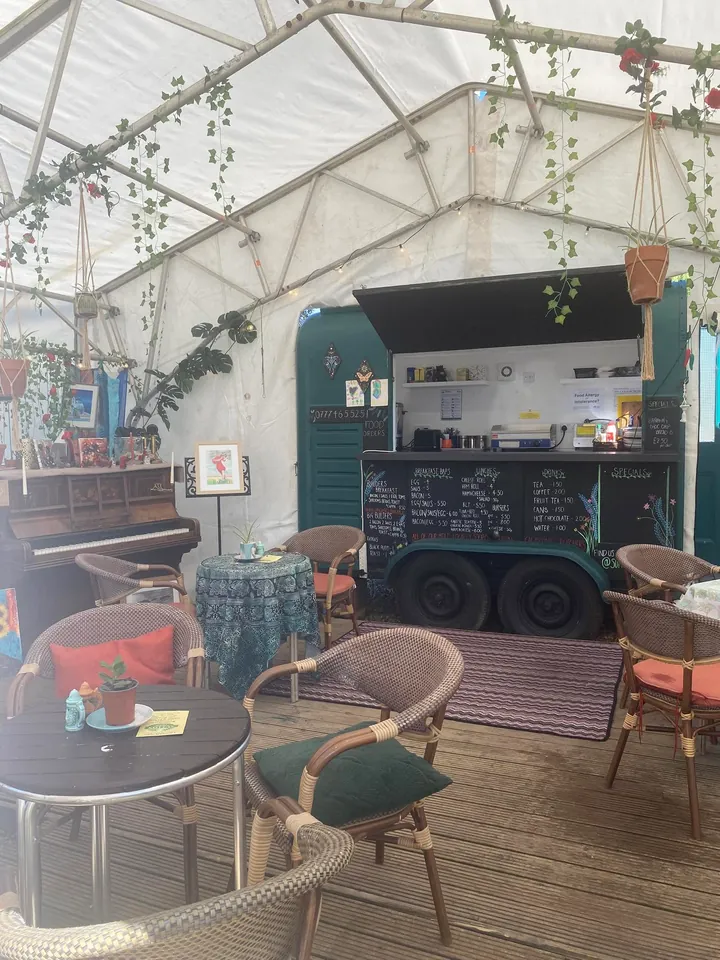

For a very good morning
Proper breakfasts
Hearty cooked breakfasts and generously filled baps, with all our meat from Cawdrons Butchers.

A little tucked away. A lot to love.
Sutton Garden Kitchen is Emma’s cosy horse box café in Sutton, Norfolk. Come for a proper breakfast, a slice of something lovely, or simply a cuppa and a chat.
Behind Sutton Building Supplies, Norfolk

Meet Emma. Make yourself at home.
Sutton Garden Kitchen is Emma’s cosy, quirky little café — a horse box kitchen tucked inside a welcoming marquee, behind Sutton Building Supplies.
There are colourful corners, comfy seats, books to swap and a piano. It’s a place to take a breather, enjoy something tasty and feel welcome, just as you are.
Whether you’re popping in for breakfast or settling in with a cuppa, Emma would love to say hello.
There’s a little more to us
A few of our favourite corners. A little colour, a little music, and plenty of character.
From our Facebook community
A few little words from people who’ve visited our little kitchen.
“the most brilliant welcome and most delicious breakfast”
“Like nothing I’ve experienced before.”
“The breakfast was amazing and the welcome was even better.”
Find us in Sutton, Norfolk
We’re tucked away behind Sutton Building Supplies.
Look for our welcome sign and come on in.
Behind Sutton Building Supplies
Get directionswhat3words · Café entrance ///shame.bids.latitudes
Call Emma 07342 269963All major credit and debit cards accepted, as well as cash.
| Wednesday | 9am – 2pm |
|---|---|
| Thursday | 9am – 2pm |
| Friday | 9am – 2pm |
| Saturday | 9am – 2pm |
| Sunday – Tuesday | Closed |
Planning a special trip? Give Emma a call or check Facebook for opening updates.
{kind=link}
{kind=link}
{kind=link}
{kind=link}
{kind=link}